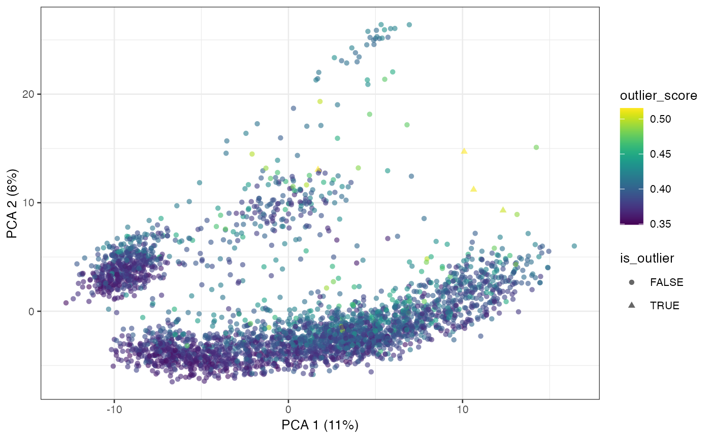

R/outlierDetection.R
calculateOutlierScore.RdThis function calculates outlier scores for each cell using isolation.forest. Isolation forests explicitly try to estimate the isolation of datapoints, in contrast to estimating the full distribution of the data. To quote the isotree documentation: "Isolation Forest is an algorithm originally developed for outlier detection that consists in splitting sub-samples of the data according to some attribute/feature/column at random". Basically, it calculates how quickly each cell gets split off from the rest of the group when the dataset is randomly partitioned by a hyperplane. There are many adjustable parameters (e.g. number of trees, dimensionality of the splits, etc), but the defaults usually work pretty well.
calculateOutlierScore(
sce,
dimred = NULL,
use_pcs = FALSE,
plot = TRUE,
prediction_thresh = 0.5,
...
)a SingleCellExperiment object containing a logcounts matrix
if specified, plot the specified reduced dimension with plotReducedDim, colored by outlier score
if TRUE, run the outlier detection in principal component space. Otherwise, use logcounts.
if TRUE and a dimred is specified, plot the isoscore against the specified dimred
threshold to use for binary outlier calling
arguments to pass to isolation.forest
the SingleCellExperiment object with outlier_score
and is_outlier added to the colData. Also, the resulting
isotree model is attached to the object's metadata.
If use_pcs is turned on, it will use all available
PCs in the PCA reduced dimension slot if it exists, and run
runPCA with default settings and use that if it
does not.
prediction_thresh is the threshold to use on the
isoforest score predictions
library(scater)
library(scran)
library(scRNAseq)
# Load data
sce <- HeOrganAtlasData(tissue = c("Marrow"), ensembl = FALSE)
#> snapshotDate(): 2023-10-24
#> see ?scRNAseq and browseVignettes('scRNAseq') for documentation
#> loading from cache
#> see ?scRNAseq and browseVignettes('scRNAseq') for documentation
#> loading from cache
#> see ?scRNAseq and browseVignettes('scRNAseq') for documentation
#> loading from cache
# Divide the data into reference and query datasets
set.seed(100)
query_data <- logNormCounts(sce)
query_data <- runPCA(query_data)
query_data <- calculateOutlierScore(
query_data,
plot = TRUE,
dimred = "PCA",
use_pcs = TRUE
)
#> Warning: Attempting to use more than 1 thread, but package was compiled without OpenMP support. See https://github.com/david-cortes/installing-optimized-libraries#4-macos-install-and-enable-openmp
